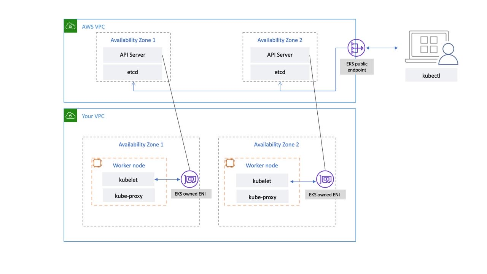

EKS Control Plane¶
Amazon Elastic Kubernetes Service (EKS) is a managed Kubernetes service that makes it easy for you to run Kubernetes on AWS without needing to install, operate, and maintain your own Kubernetes control plane or worker nodes. It runs upstream Kubernetes and is certified Kubernetes conformant. This conformance ensures that EKS supports the Kubernetes APIs, just like the open-source community version that you can install on EC2 or on-premises. Existing applications running on upstream Kubernetes are compatible with Amazon EKS.
EKS automatically manages the availability and scalability of the Kubernetes control plane nodes, and it automatically replaces unhealthy control plane nodes.
EKS Architecture¶
EKS architecture is designed to eliminate any single points of failure that may compromise the availability and durability of the Kubernetes control plane.
The Kubernetes control plane managed by EKS runs inside an EKS managed VPC. The EKS control plane comprises the Kubernetes API server nodes, etcd cluster. Kubernetes API server nodes that run components like the API server, scheduler, and kube-controller-manager run in an auto-scaling group. EKS runs a minimum of two API server nodes in distinct Availability Zones (AZs) within in AWS region. Likewise, for durability, the etcd server nodes also run in an auto-scaling group that spans three AZs. EKS runs a NAT Gateway in each AZ, and API servers and etcd servers run in a private subnet. This architecture ensures that an event in a single AZ doesn’t affect the EKS cluster's availability.
When you create a new cluster, Amazon EKS creates a highly-available endpoint for the managed Kubernetes API server that you use to communicate with your cluster (using tools like kubectl). The managed endpoint uses NLB to load balance Kubernetes API servers. EKS also provisions two ENIs in different AZs to facilitate communication to your worker nodes.

You can configure whether your Kubernetes cluster’s API server is reachable from the public internet (using the public endpoint) or through your VPC (using the EKS-managed ENIs) or both.
Whether users and worker nodes connect to the API server using the public endpoint or the EKS-managed ENI, there are redundant paths for connection.
Recommendations¶
Monitor Control Plane Metrics¶
Monitoring Kubernetes API metrics can give you insights into control plane performance and identify issues. An unhealthy control plane can compromise the availability of the workloads running inside the cluster. For example, poorly written controllers can overload the API servers, affecting your application's availability.
Kubernetes exposes control plane metrics at the /metrics endpoint.
You can view the metrics exposed using kubectl:
kubectl get --raw /metrics
These metrics are represented in a Prometheus text format.
You can use Prometheus to collect and store these metrics. In May 2020, CloudWatch added support for monitoring Prometheus metrics in CloudWatch Container Insights. So you can also use Amazon CloudWatch to monitor the EKS control plane. You can use Tutorial for Adding a New Prometheus Scrape Target: Prometheus KPI Server Metrics to collect metrics and create CloudWatch dashboard to monitor your cluster’s control plane.
You can find Kubernetes API server metrics here. For example, apiserver_request_duration_seconds can indicate how long API requests are taking to run.
Consider monitoring these control plane metrics:
API Server¶
| Metric | Description |
|---|---|
apiserver_request_total |
Counter of apiserver requests broken out for each verb, dry run value, group, version, resource, scope, component, client, and HTTP response contentType and code. |
apiserver_request_duration_seconds* |
Response latency distribution in seconds for each verb, dry run value, group, version, resource, subresource, scope, and component. |
apiserver_admission_controller_admission_duration_seconds |
Admission controller latency histogram in seconds, identified by name and broken out for each operation and API resource and type (validate or admit). |
rest_client_request_duration_seconds |
Request latency in seconds. Broken down by verb and URL. |
rest_client_requests_total |
Number of HTTP requests, partitioned by status code, method, and host. |
etcd¶
| Metric | Description |
|---|---|
etcd_request_duration_seconds |
Etcd request latency in seconds for each operation and object type. |
etcd_db_total_size_in_bytes |
Etcd database size. |
Consider using the Kubernetes Monitoring Overview Dashboard to visualize and monitor Kubernetes API server requests and latency and etcd latency metrics.
The following Prometheus query can be used to monitor the current size of etcd. The query assumes there is job called kube-apiserver for scraping metrics from API metrics endpoint.
max(etcd_db_total_size_in_bytes{job="kube-apiserver"} / (8 * 1024 * 1024 * 1024))
Cluster Authentication¶
EKS currently supports two types of authentication: bearer/service account tokens and IAM authentication which uses webhook token authentication. When users call the Kubernetes API, a webhook passes an authentication token included in the request to IAM. The token, a base 64 signed URL, is generated by the AWS Command Line Interface (AWS CLI).
The IAM user or role that creates the EKS Cluster automatically gets full access to the cluster. You can manage access to the EKS cluster by editing the aws-auth configmap.
If you misconfigure the aws-auth configmap and lose access to the cluster, you can still use the cluster creator’s user or role to access your EKS cluster.
In the unlikely event that you cannot use the IAM service in the AWS region, you can also use the Kubernetes service account’s bearer token to manage the cluster.
Create a “super-admin” account that is permitted to perform all actions in the cluster:
kubectl -n kube-system create serviceaccount super-admin
Create a role binding that gives super-admin cluster-admin role:
kubectl create clusterrolebinding super-admin-rb --clusterrole=cluster-admin --serviceaccount=kube-system:super-admin
Get service account’s secret:
SECRET_NAME=`kubectl -n kube-system get serviceaccount/super-admin -o jsonpath='{.secrets[0].name}'`
Get token associated with the secret:
TOKEN=`kubectl -n kube-system get secret $SECRET_NAME -o jsonpath='{.data.token}'| base64 --decode`
Add service account and token to kubeconfig:
kubectl config set-credentials super-admin --token=$TOKEN
Set the current-context in kubeconfig to use super-admin account:
kubectl config set-context --current --user=super-admin
Final kubeconfig should look like this:
apiVersion: v1
clusters:
- cluster:
certificate-authority-data:<REDACTED>
server: https://<CLUSTER>.gr7.us-west-2.eks.amazonaws.com
name: arn:aws:eks:us-west-2:<account number>:cluster/<cluster name>
contexts:
- context:
cluster: arn:aws:eks:us-west-2:<account number>:cluster/<cluster name>
user: super-admin
name: arn:aws:eks:us-west-2:<account number>:cluster/<cluster name>
current-context: arn:aws:eks:us-west-2:<account number>:cluster/<cluster name>
kind: Config
preferences: {}
users:
#- name: arn:aws:eks:us-west-2:<account number>:cluster/<cluster name>
# user:
# exec:
# apiVersion: client.authentication.k8s.io/v1alpha1
# args:
# - --region
# - us-west-2
# - eks
# - get-token
# - --cluster-name
# - <<cluster name>>
# command: aws
# env: null
- name: super-admin
user:
token: <<super-admin sa’s secret>>
Handling Cluster Upgrades¶
Since April 2021, Kubernetes release cycle has been changed from four releases a year (once a quarter) to three releases a year. A new minor version (like 1.21 or 1.22) is released approximately every fifteen weeks. Starting with Kubernetes 1.19, each minor version is supported for approximately twelve months after it's first released.. Kubernetes supports compatibility between the control plane and worker nodes for at least two minor versions.
In line with the Kubernetes community support for Kubernetes versions, EKS provides at least three production-ready versions of Kubernetes at any given time, with a fourth version in deprecation.
EKS will announce the deprecation of a given Kubernetes minor version at least 60 days before the end of support date. On the end of support date, clusters running the deprecated version will begin to be automatically updated to the next EKS-supported version of Kubernetes.
EKS performs in-place cluster upgrades for both Kubernetes and EKS platform versions. This simplifies cluster operations and lets you take advantage of the latest Kubernetes features and apply security patches, without any downtime.
New Kubernetes versions introduce significant changes, and you cannot downgrade a cluster once upgraded. Having a well-documented process for handling cluster upgrades is necessary for a smooth transition to newer Kubernetes versions. You may consider migrating to new clusters when upgrading to newer Kubernetes versions instead of performing in-place cluster upgrades. Cluster backup and restore tools like VMware’s Velero can help you migrate to a new cluster.
- You should familiarize yourself with the Kubernetes deprecation policy as newer versions may deprecate APIs and features that may break existing applications.
- Before upgrading the cluster, you should review the Kubernetes change log and Amazon EKS Kubernetes versions to understand any negative impact to your workloads.
- Consider testing the cluster upgrade in a non-production environment and identify any impacts to current workloads and controllers. You can automate the testing by building a continuous integration workflow to test the compatibility of your applications, controllers, and custom integrations before moving to a new Kubernetes version.
- You may also need to upgrade Kubernetes add-ons after upgrading the cluster. Review Updating an Amazon EKS cluster Kubernetes version to validate the compatibility of cluster add-ons with the cluster version.
- Consider turning on control plane logging and review the logs for any errors.
- Consider using
eksctlto manage EKS cluster. You can useeksctlto update the control plane, add-ons, and worker nodes. - EKS control plane upgrade doesn’t include upgrading worker nodes. You are responsible for updating EKS worker nodes. Consider using EKS managed node groups or EKS on Fargate to automate the process of upgrading worker nodes.
- If required, you can use
kubectl convertplugin to convert Kubernetes manifests files between different API versions.
Running large clusters¶
EKS actively monitors the load on control plane instances and automatically scales them to ensure high performance. However, you should account for potential performance issues and limits within Kubernetes and quotas in AWS services when running large clusters.
- Clusters with more than 1000 services may experience network latency with using
kube-proxyiniptablesmode according to the tests performed by the ProjectCalico team. The solution is to switch to runningkube-proxyinipvsmode. - You may also experience EC2 API request throttling if the CNI needs to request IP addresses for Pods or if you need to create new EC2 instances frequently. You can reduce calls EC2 API by configuring the CNI to cache IP addresses. You can use larger EC2 instance types to reduce EC2 scaling events.
Know limits and service quotas¶
AWS sets service limits (an upper limit on the number of each resource your team can request) to protect you from accidentally over-provisioning resources. Amazon EKS Service Quotas lists the service limits. There are two types of limits, soft limits, that can be changed using AWS Service Quotas. Hard limits cannot be changed. You should consider these values when architecting your applications. Consider reviewing these service limits periodically and incorporate them during in your application design.
- Besides the limits from orchestration engines, there are limits in other AWS services, such as Elastic Load Balancing (ELB) and Amazon VPC, that may affect your application performance.
- More about EC2 limits here: EC2 service limits.
- Each EC2 instance limits the number of packets that can be sent to the Amazon-provided DNS server to a maximum of 1024 packets per second per network interface.
- In EKS environment, etcd storage limit is 8GB as per upstream guidance. Please monitor metric
etcd_db_total_size_in_bytesto track etcd db size. You can refer to alert rulesetcdBackendQuotaLowSpaceandetcdExcessiveDatabaseGrowthto setup this monitoring.